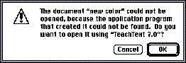

|
Dialog Box MessagesWrite messages in dialog boxes and alert boxes that make sense to the user. Use simple, nontechnical language; don't provide system-oriented information that the user can't respond to. When possible, give the user information that helps explain how to correct the problem. Figure 6-23 shows an example of a well-written dialog box message that replaces the message users used to see: "The application is busy or missing."Figure 6-23 A well-written dialog box message  Use the name of the document or application in a dialog box to help users understand the message. For example, a dialog box that appears when a user chooses Shut Down after working on the company's annual report using the TeachText application should say "Save changes to the TeachText document "Annual Report" before quitting?" rather than simply "Save changes before quitting?" This kind of labeling helps users who are working with several documents or applications at once to make decisions about each one individually. See the section "Dialog Box Messages" on page 311 in Chapter 11, "Language," for more information about writing dialog box messages. See the section "Button Names" on page 207 in Chapter 7, "Controls," for more information on naming buttons. |